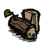
Log
砍伐树木获得的基础材料。可作为燃料，也能加工成木板。
- 堆叠上限
- 20
- 燃料时长
- 45 秒
c_give("log", 1)你的饥荒口袋百科。查找物品、了解用途，
一键复制指令，让每一次探索都从容一点。

砍伐树木获得的基础材料。可作为燃料，也能加工成木板。
c_give("log", 1)采集草丛获得。制作火把、绳子和基础生存工具的常用材料。
c_give("cutgrass", 1)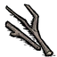
采集树苗获得。制作工具、火把和料理时都很实用。
c_give("twigs", 1)开采岩石获得。用于营火、建筑和精炼石砖。
c_give("rocks", 1)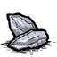
开采岩石或在地面拾取。制作斧头、鹤嘴锄等早期工具。
c_give("flint", 1)开采含金岩石，或与猪王交易获得。是科技与黄金工具的常用材料。
c_give("goldnugget", 1)用干草编成的精炼材料。常用于工具、护甲和生存装备。
c_give("rope", 1)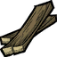
精炼后的木材。常用于制作储物箱和科技建筑。
c_give("boards", 1)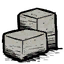
精炼后的石材。常用于高级建筑和科技设施。
c_give("cutstone", 1)从蜘蛛等来源获得。用于捕虫网、钓竿、帐篷和衣物。
c_give("silk", 1)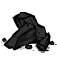
砍伐烧焦的树木获得。可作燃料，也是烹饪锅的重要材料。
c_give("charcoal", 1)用于暗影与远古魔法的材料，也能为部分魔法装备补充燃料。
c_give("nightmarefuel", 1)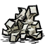
海上盐堆产出的矿物。用于制作盐盒与调味盐。
c_give("saltrock", 1)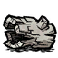
在海岸拾取或砍伐浮木获得。用于海洋相关制作。
c_give("driftwood_log", 1)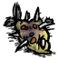
食物、料理或烹饪原料。食用效果与保质期请查阅 Wiki。
c_give("spoiled_fish", 1)食物、料理或烹饪原料。食用效果与保质期请查阅 Wiki。
c_give("spoiled_fish_small", 1)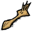
基础资源或制作材料。展开详情查看已收录的制作关联。
c_give("malbatross_beak", 1)可用于制作：羽毛帆布 · 斜天翁羽浮标
c_give("malbatross_feather", 1)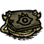
制作材料：木板 ×1 · 绳子 ×1
c_give("multiplayer_portal_moonrock_constr_plans", 1)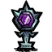
制作材料：月亮石 ×1 · 紫色宝石 ×1
c_give("moonrockidol", 1)魔法或远古相关物品。具体效果、科技要求和适用版本请查阅 Wiki。
c_give("moonrockseed", 1)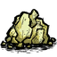
可用于制作：信号 · 强心针 · 冰火 · 冷篝火 · 晨星
c_give("nitre", 1)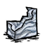
可用于制作：大理石豆子 · 大理石甲 · 茶几 · 棋盘地板
c_give("marble", 1)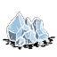
开采迷你冰川获得。可作烹饪锅填充物，也用于雪球发射器。
c_give("ice", 1)